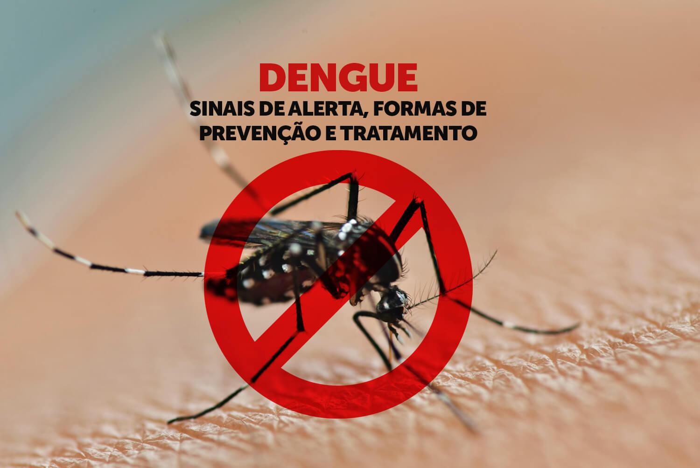

Sinais de alarme da dengue:
Dor abdominal;
Vômitos persistentes;
Acúmulo de líquidos (ascite, derrame pleural, derrame pericárdico);
Hipotensão postural e/ou lipotímia;
Letargia e/ou irritabilidade;
Hepatomegalia maior do que 2cm abaixo do rebordo costal;
Sangramento de mucosa;
Aumento progressivo do hematócrito.
Para prevenir a proliferação do mosquito da dengue, é importante seguir algumas medidas:
1: Elimine possíveis criadouros de água parada, como recipientes abandonados, pneus velhos, vasos de plantas e garrafas vazias.
2: Mantenha caixas d'água, piscinas e outros recipientes de armazenamento de água devidamente tampados.
3: Limpe regularmente calhas e ralos, evitando o acúmulo de água.
4: Utilize telas em janelas e portas para impedir a entrada do mosquito.
5: Aplique repelente em áreas expostas da pele e use roupas que cubram todo o corpo, especialmente durante o amanhecer e o entardecer, quando os mosquitos estão mais ativos.
6: Realize ações de controle de vetores em áreas de alto risco, como campanhas de nebulização e aplicação de larvicidas.
Seguir essas medidas ajuda a reduzir a chance de proliferação do mosquito e a transmissão da dengue, ja que não existe tratamento específico para combater o vírus da dengue. O mais importante é combater a desidratação e aliviar os sintomas com medicamentos.